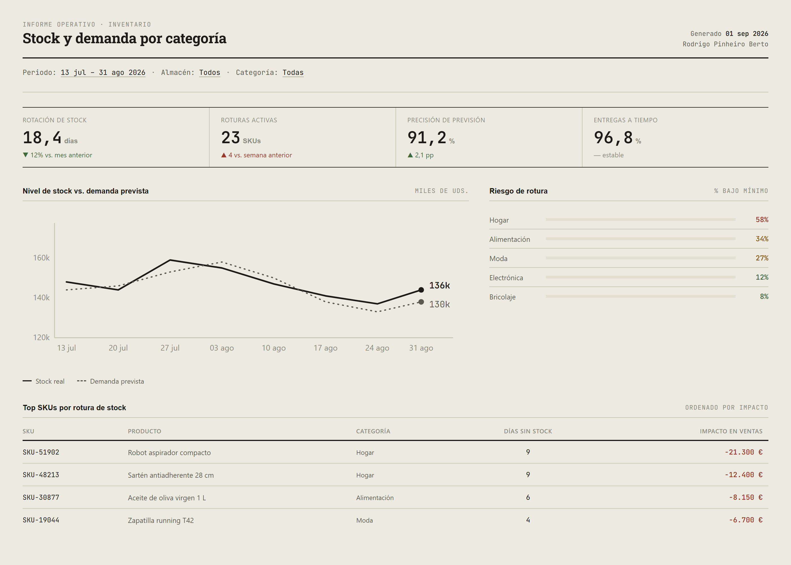
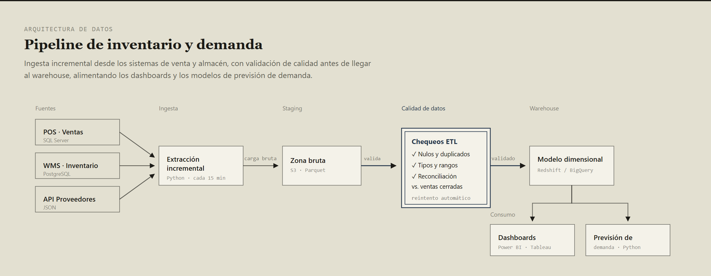

Trabajo con SQL, Python y Power BI para llevar el dato desde el origen hasta el informe que alguien usa para decidir. Aquí están algunos casos, con datos sintéticos porque no puedo publicar los de mis clientes.
En cada caso cuento cómo lo construí y por qué.
Power BI sobre PostgreSQL con semáforo de proyectos, desviación de coste y seguimiento Scrum. Carga en Python con validación, una consulta optimizada con índices y un asistente de IA para preguntar a los datos.
Ver proyecto Tableau PublicPuntualidad y ocupación por ruta, ingresos, mantenimiento y experiencia del pasajero, en un workbook interactivo.
Ver proyecto Tableau · LODEntregas a tiempo, coste por transportista y tiempo de tránsito. Campos calculados, LOD y acciones de filtro.
Ver proyecto Power BI · DAXFiltro por región, modelo en estrella y medidas DAX con CALCULATE, DIVIDE y SAMEPERIODLASTYEAR.
Ver proyecto Power BI · Time intelligenceRanking de vendedores con barras de progreso e inteligencia de tiempo con TOTALYTD y SAMEPERIODLASTYEAR.
Ver proyecto Power Query · Código MUna consulta de Power Query que junta los archivos de varias sucursales, cada uno con su formato, en una sola tabla.
Ver proyecto DAX · Performance AnalyzerUn ranking lento, analizado con el Performance Analyzer y reescrito con RANKX y ALLSELECTED. De más de 8 s a menos de 1 s.
Ver proyecto Power BI · DiseñoDiseño tipo plantilla, con menú lateral, KPIs grandes y filtros en un panel aparte. Medidas con AVERAGEX y SWITCH.
Ver proyectoRotación de stock, riesgo de rotura por categoría y precisión de la previsión, con el ETL que lo alimenta.

De los sistemas origen al warehouse: carga incremental, staging, validación y reintentos cuando algo falla.
